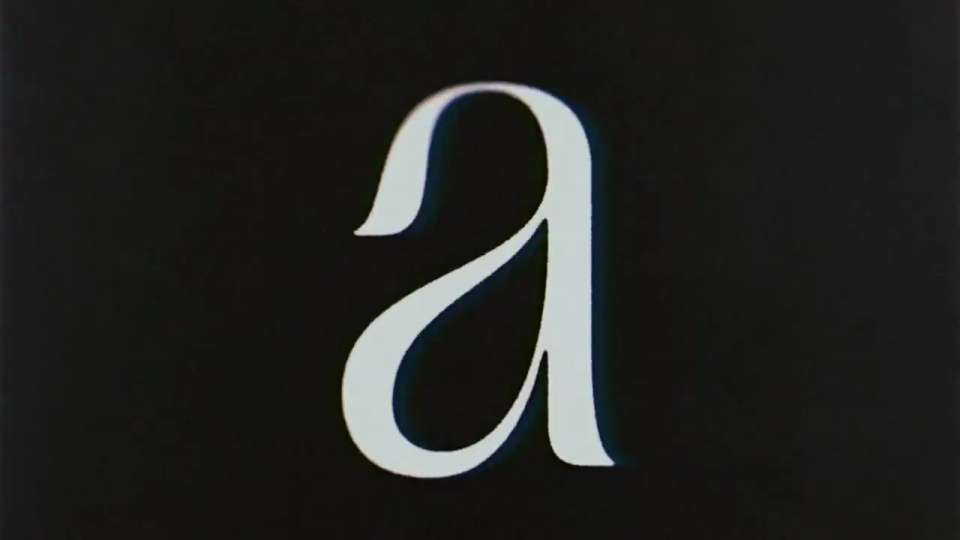
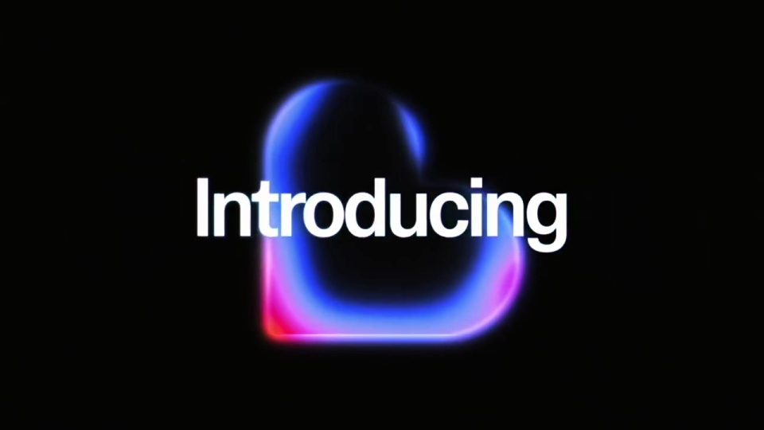
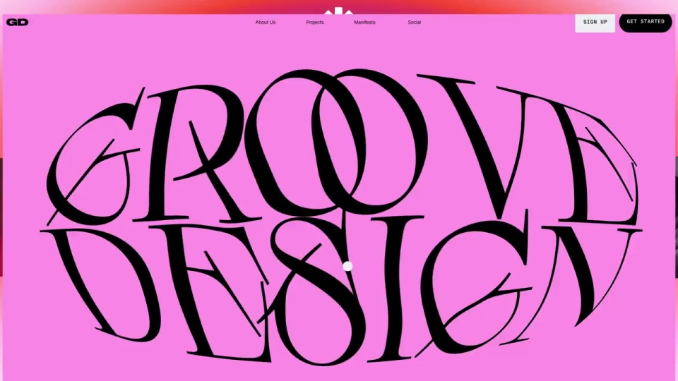
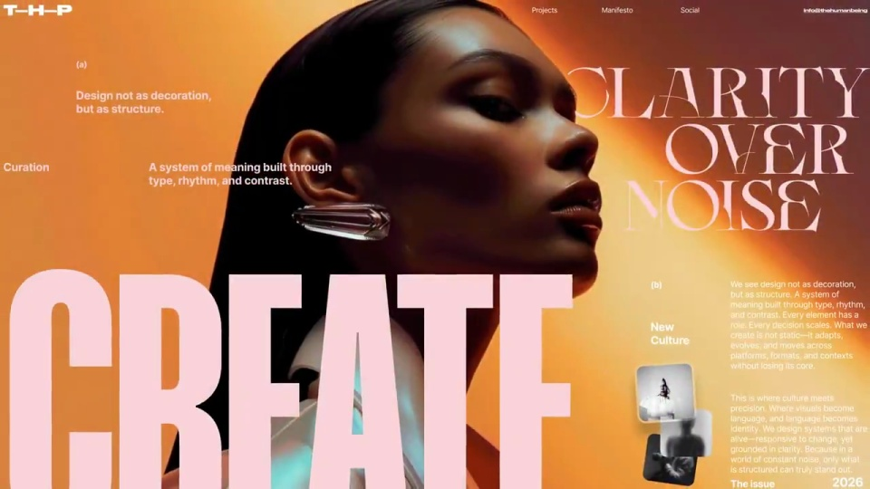
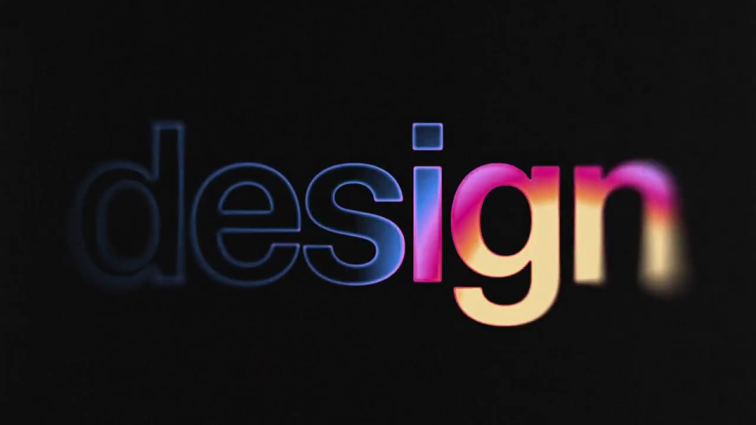

Aesthetics
Build aesthetic expectations through designs first, then explain how that design is produced through specific edits. Boldly showcase visual differences in the first half, and shift focus to selection and editing in the second.
View HTML source
<!doctype html><html lang="zh-CN"><meta charset="utf-8"><meta name="viewport" content="width=device-width,initial-scale=1"><title>Aesthetics · sequence</title><style>html,body{margin:0;width:100%;height:100%;overflow:hidden;background:#101013}canvas{display:block;width:100%;height:100%;object-fit:contain}</style><body data-mode="sequence"><canvas width="1000" height="600"></canvas><script src="data.js"></script><script src="common.js"></script><script src="scene.js"></script><script src="bridge.js"></script></body></html>Motion and composition
Local motion · Composition rules
Start with visual density, then show clear interactions
Open with rapid cuts through colors, materials, letterforms and layouts, giving each clip one visual focus. Slow down when entering the product to show requests, direction selection, annotations and revisions; viewers should be able to understand a complete change.
A black background supports highly saturated designs

Keep the background dark, using pink, blue and orange in designs and soft lighting areas. Display headings may vary boldly in weight, width and scale, while interface typography stays consistent and restrained.
Material close-ups may fill the frame; design cards retain their complete edges; inputs and annotations are smaller but must sit in a clear foreground layer.
Different direction choices must produce different designs
View HTML source
<!doctype html><html lang="zh-CN"><meta charset="utf-8"><meta name="viewport" content="width=device-width,initial-scale=1"><title>Aesthetics · sequence</title><style>html,body{margin:0;width:100%;height:100%;overflow:hidden;background:#101013}canvas{display:block;width:100%;height:100%;object-fit:contain}</style><body data-mode="clip" data-start="20" data-end="38"><canvas width="1000" height="600"></canvas><script src="data.js"></script><script src="common.js"></script><script src="scene.js"></script><script src="bridge.js"></script></body></html>After the design request, show distinguishable directions before the selection action. Respond to color, font and page-structure edits with the corresponding changes; do not repeatedly retitle the same design and present it as iteration.
Return to the opening message at the end
Finish by showing complete website and store pages, then return to the opening text about design time. The ending gains its persuasive force from the creation process just shown.
When changing themes, prepare new design examples, requests and revision results together. Preserve the progression from aesthetic showcase to interaction evidence, with the brand mark serving only as the final signature.
Sections and rhythm
Click a section to seek to it in the choreography example above.




Visual references · Discrete still frames
Creating other themes
- When changing brands, replace the designs, prompts and revised results while preserving the aesthetic showcase → interaction evidence structure
- Replacing only the closing logo does not adapt the entire narrative
Production constraints
Large heading / Material clips / Website cards / Input field / Option group / Annotations
- The first section builds aesthetic expectations through different design dimensions, and the second explains how they are achieved through actual interactions
- Alternate large design images with small input cards; show the corresponding revision only after the interaction
- The ending reconnects with the opening message about time to create contrast